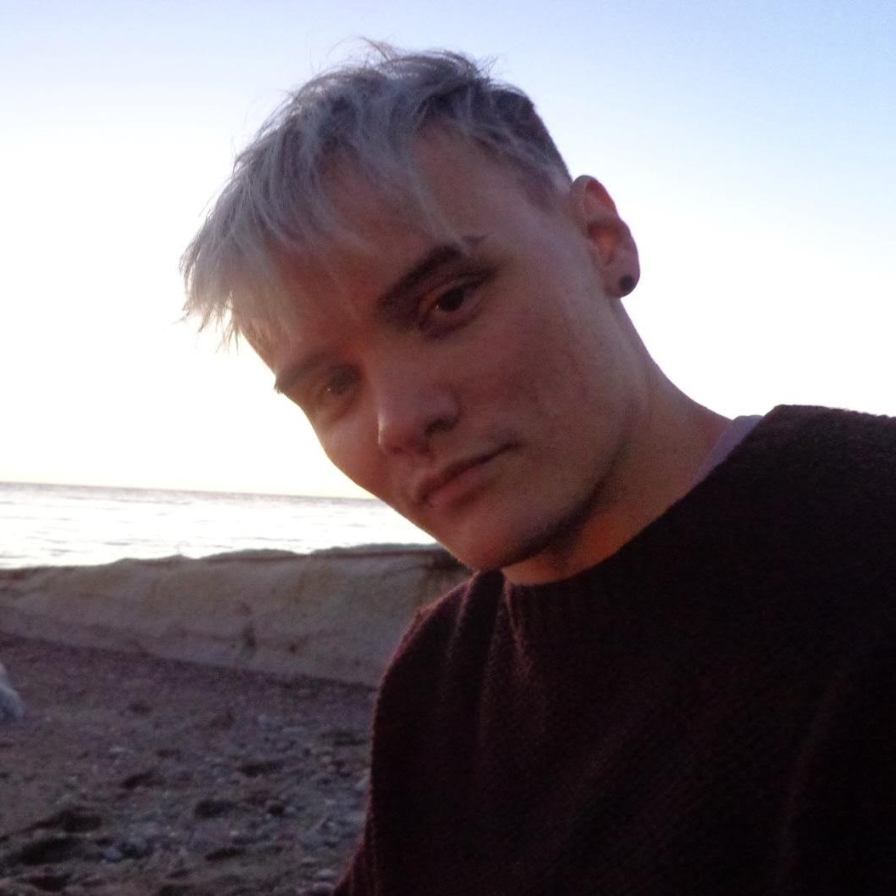
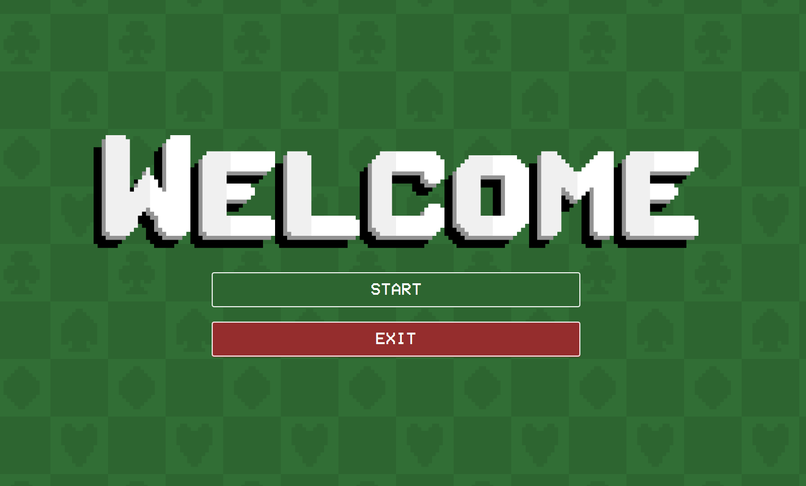
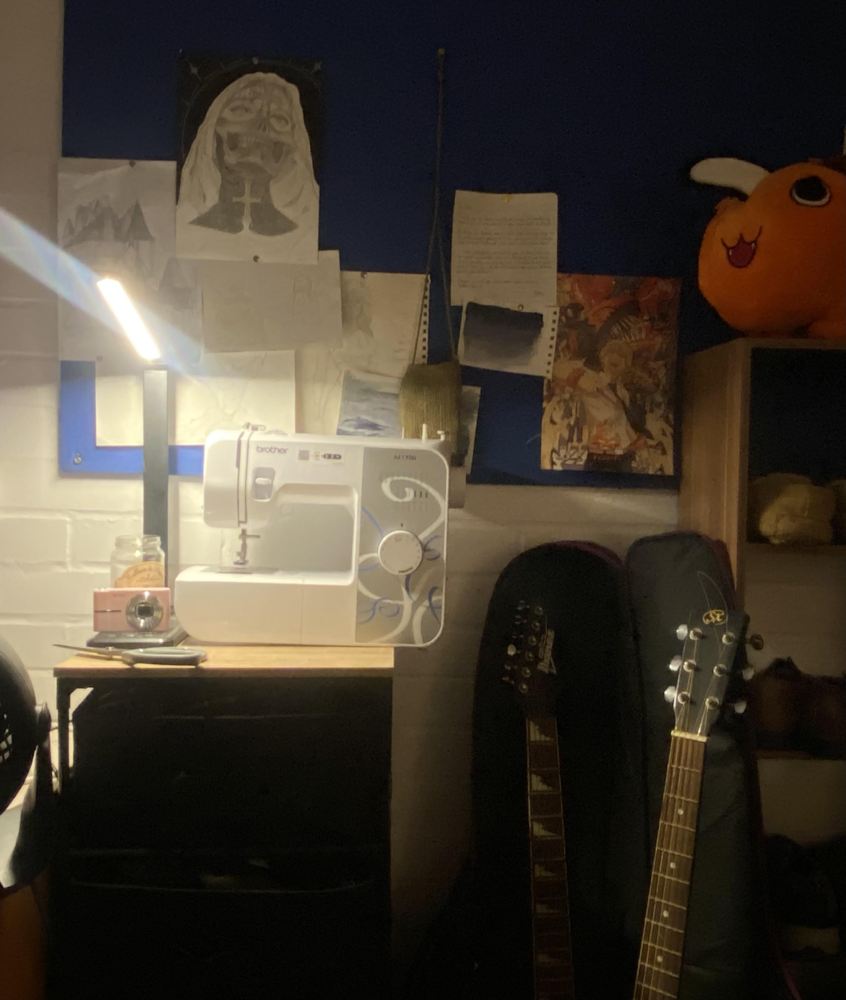

Personal portfolio
Building a polished online presence that reflects both my technical work and my personality.

Computer Science student • Aberystwyth University
I’m currently a BSc Computer Science student approaching my third year, and I’m building toward a career in software engineering. I’m especially interested in creating practical software, learning by building, and turning ideas into useful tools.
Final-year CS student with a green thumb at Aberystwyth University building personal projects and websites. Interested in applied software roles at the intersection of tech, the environment and making a positive impact — and hoping to work in Japan one day. I have a big love for learning and travel, aiming to achieve a lifestyle close to the digital nomad ideal. I’m currently exploring the world of web development and software engineering, and I’m always looking for new challenges to grow my skills.
Building a polished online presence that reflects both my technical work and my personality.

A card game developed with Java and built with Maven. Fully functional with great features

Exploring creative outlets and interests outside of my academic and professional pursuits.
I’m always interested in conversations about software engineering, internships, university projects, and new ideas to build.
If you’d like to chat, feel free to reach out through the channels you use most.